Lesson content · 课文
Lesson 18: What are their jobs? · 他们是做什么工作的？
Listen and answer the questions. 听录音并回答问题。
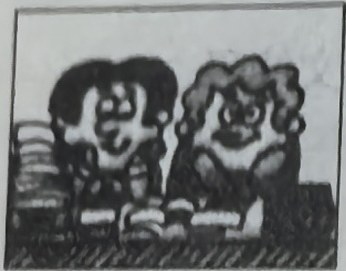
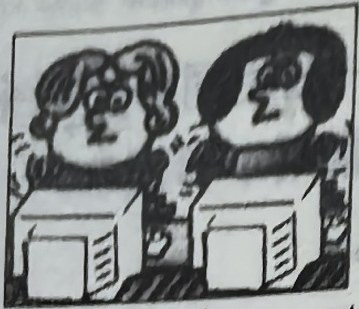
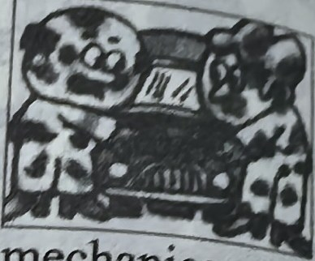
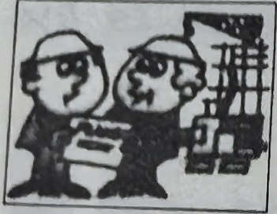
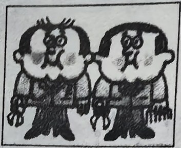
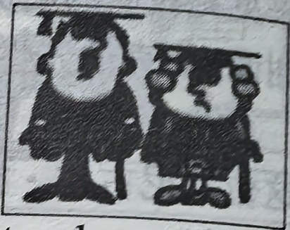
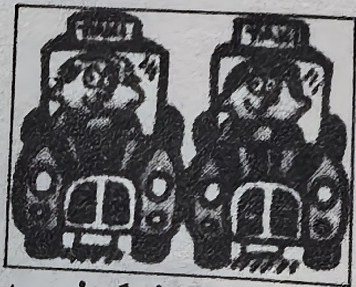
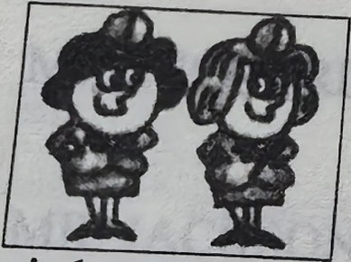
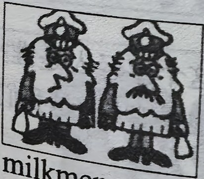
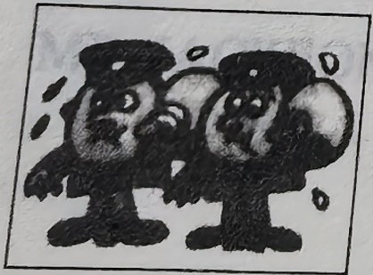
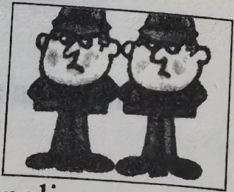
Notes on the text · 课文注释
- 如果名词是以 f 或 fe 结尾的，变成复数时，一般要把 f 或 fe 变成 v，再加 es，如 housewife — housewives。
- 英语中有一些名词的复数形式是不规则的，如 man，woman，以及由这两个词组成的复合名词：man — men；woman — women；milkman — milkmen；policewoman — policewomen。
Practice · 课文练习
Written exercises · 书面练习
A. He, She, We or They
Complete these sentences using He, She, We or They. 完成以下句子，用 He、She、We 或 They 填空。
Example · 例句
Those men are lazy. They are sales reps.
-
textbook: A. He, She, We or They — That man is tall. ____ is a policeman.
-
textbook: A. He, She, We or They — Those girls are busy. ____ are keyboard operators.
-
textbook: A. He, She, We or They — Our names are Britt and Inge. ____ are Swedish.
-
textbook: A. He, She, We or They — Look at our office assistant. ____ is very hard-working.
-
textbook: A. He, She, We or They — Look at Nicola. ____ is very pretty.
-
textbook: A. He, She, We or They — Michael Baker and Jeremy Short are employees. ____ are sales reps.
B. Questions and answers · 提问并回答
Write questions and answers. 模仿例句提问并回答。
Example · 例句
(mechanics) / sales reps
What are their jobs?
Are they mechanics or sales reps?
They aren’t mechanics. They’re sales reps.
-
textbook: B. Questions and answers · 提问并回答 — (keyboard operators) / air hostesses
-
textbook: B. Questions and answers · 提问并回答 — (postmen) / policemen
-
textbook: B. Questions and answers · 提问并回答 — (policewomen) / nurses
-
textbook: B. Questions and answers · 提问并回答 — (customs officers) / hairdressers
-
textbook: B. Questions and answers · 提问并回答 — (hairdressers) / teachers
-
textbook: B. Questions and answers · 提问并回答 — (engineers) / taxi drivers
-
textbook: B. Questions and answers · 提问并回答 — (policewomen) / keyboard operators
-
textbook: B. Questions and answers · 提问并回答 — (milkmen) / engineers
-
textbook: B. Questions and answers · 提问并回答 — (policemen) / milkmen
-
textbook: B. Questions and answers · 提问并回答 — (nurses) / housewives
Practice worksheet · 配套练习
A. Structure — regular plurals
Sort these words by the sound of the plural ending: office assistants, sales reps, employees, office girls, jobs, keyboard operators, mechanics, Customs officers, air hostesses, engineers, taxi drivers. 根据复数的读音将以下名词填入表内。
-
worksheet: A. Structure — regular plurals — /s/
-
worksheet: A. Structure — regular plurals — /z/
-
worksheet: A. Structure — regular plurals — /ɪz/
A. Structure — irregular plurals
Write the plural. 写出以下名词的复数形式。
-
worksheet: A. Structure — irregular plurals — housewife
-
worksheet: A. Structure — irregular plurals — postman
-
worksheet: A. Structure — irregular plurals — man
-
worksheet: A. Structure — irregular plurals — policewoman
-
worksheet: A. Structure — irregular plurals — woman
B. Structure
Rewrite in the plural. Add a negative sentence using the words in brackets. 用复数形式改写以下句子。
Example · 例句
He is a sales rep. She is a sales rep, too. (not keyboard operators) → They are sales reps. They aren’t keyboard operators.
-
worksheet: B. Structure — He is a hard-working employee. She is a hard-working employee, too. (not lazy)
-
worksheet: B. Structure — I am a nurse. My friend is a nurse, too. (not policewomen)
-
worksheet: B. Structure — She is a taxi driver. He is a taxi driver, too. (not car mechanics)
-
worksheet: B. Structure — I am a smart student. My friend is a smart student, too. (not lazy students)
C. Situation
What do you say? 根据以下情景写出你应该说的话。
-
worksheet: C. Situation — You are introducing an English speaker to two of your colleagues.
Original images · 原图对照
Expand a page to compare it with the transcription. Open the original in a new tab to zoom in.
展开原图核对文字，也可以在新标签页打开原图放大查看。
Lesson text and oral practice · 课文与口头练习
Open original · 打开原图 ↗ Download original · 下载原图

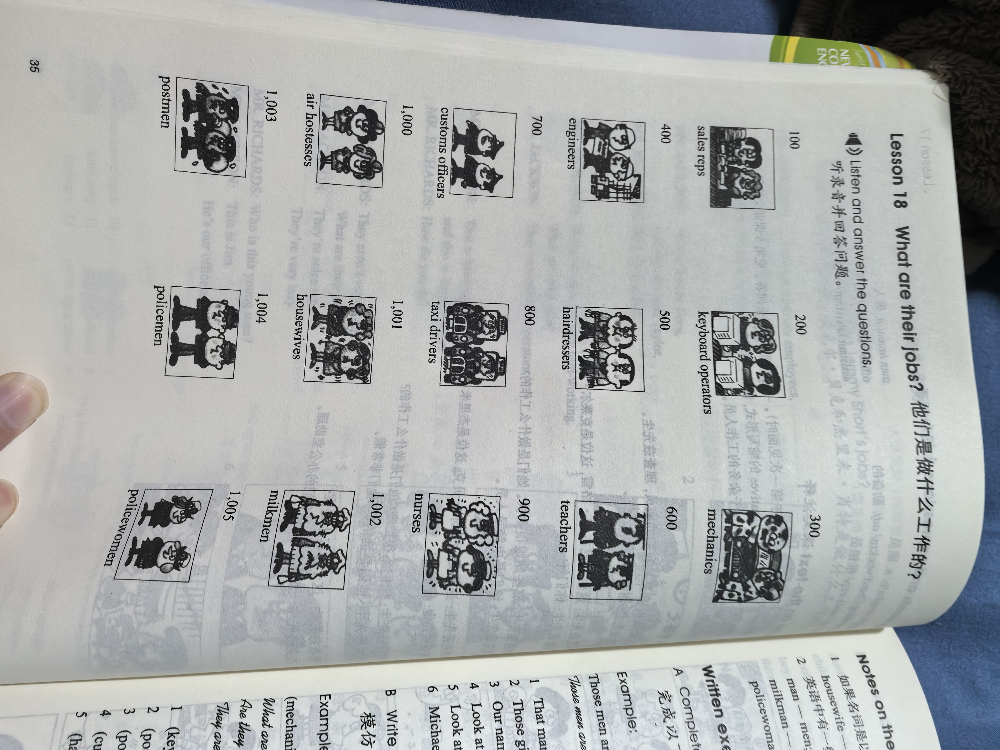
Vocabulary, notes and written exercises · 生词、注释与书面练习
Open original · 打开原图 ↗ Download original · 下载原图

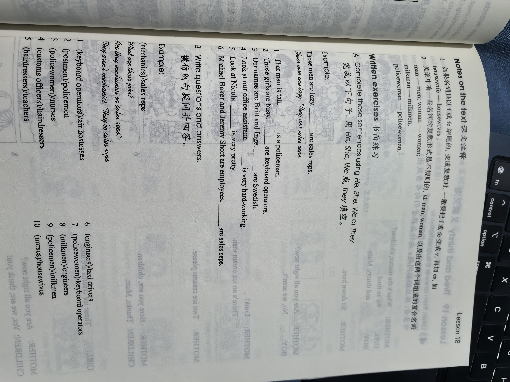

Grammar practice · 语法练习
I. Fill in the blanks with possessive adjectives
Use my, your, his, her, our, your, or their.
- Excuse me. What's ___ name? My name's Sophie.
- Michael Baker and Jeremy Short are sales reps, and here are ___ offices.
- Where are my cases? ___ cases are here.
- She's a hard-working policewoman. What's ___ name?
- We are Danish, and ___ friends are Danish, too.
- Paul's son is a keyboard operator and ___ daughter is a teacher.
- This is Anna and this is Louise. What are ___ jobs? Anna's a hairdresser and Louise is a nurse.
- I'm a sales rep. What's ___ job? I'm an engineer.
- Whose is this pen? It isn't ___ pen! My pen is blue.
- My name is Paul Smith. This is ___ wife, Stella Smith. And these are ___ children, Dave and Anna.
II. Write the correct questions for the answers according to the examples
Examples: (these men) They are my friends. / They're Customs officers. -> Who are these men? What are their jobs? (this young man) He is John. / He's a keyboard operator. -> Who is this young man? What's his job?
Write the two questions for each cue:
(that girl) She is my sister. / She's an air hostess.(these two men) They are Dave and Jack. / They're sales reps.(those people) They are my father and mother. / My father's a mechanic and my mother's a nurse.(this man and woman) They are Paul and Jane. / Paul's an office assistant and Jane's a hairdresser.(they) They are my son and daughter. / My son's an engineer and my daughter's a teacher.(these women) They are my friends. / They're policewomen.(this man) He is Dave. / He's a milkman.(they) They are Tom and Tony. / They're postmen.
Your notes and answers
Use this space for longer responses or exercises that do not have an individual answer box.